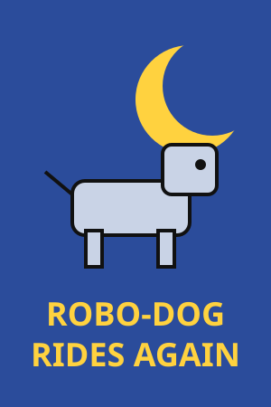
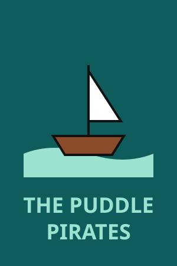

Cartoon matinee
Three Saturday-morning shows on the big screen, one after another, with cereal at the interval.
The trailer
Before every show: the opening of Ulysses 31 (1981), the space-age Odyssey.
Now showing

Sold out

Sold out

Sold out
Visit
Doors open at 8:30. The archive is on the second floor of the Harris Building, with a lift by the main stairs.
Every screening has captions on the big screen. Ask us about seating or quiet-room times.
Can't make it? Join the mailing list for the next matinee, or borrow a tape to watch at home.
Cereal is free. Bring your own bowl, or borrow one of ours.